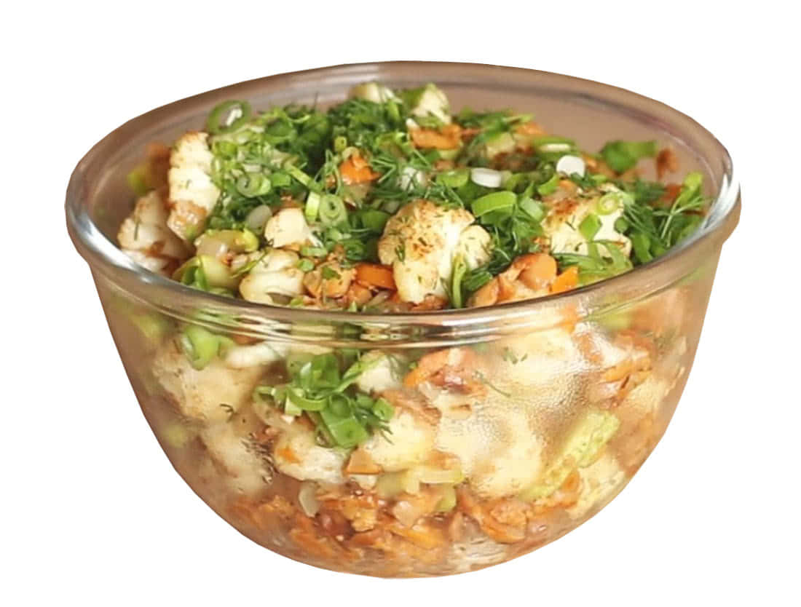
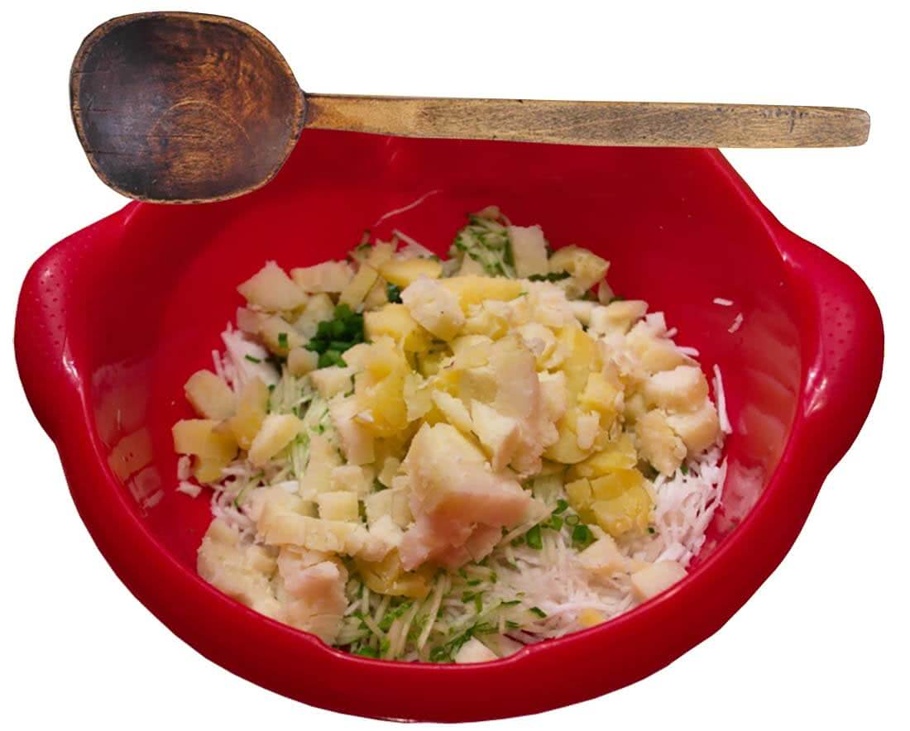
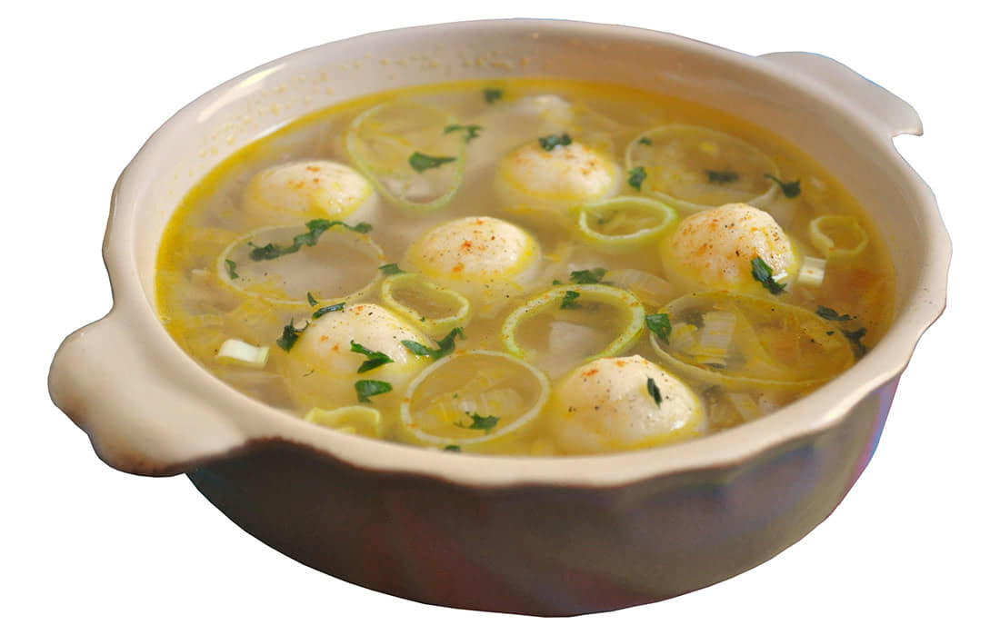
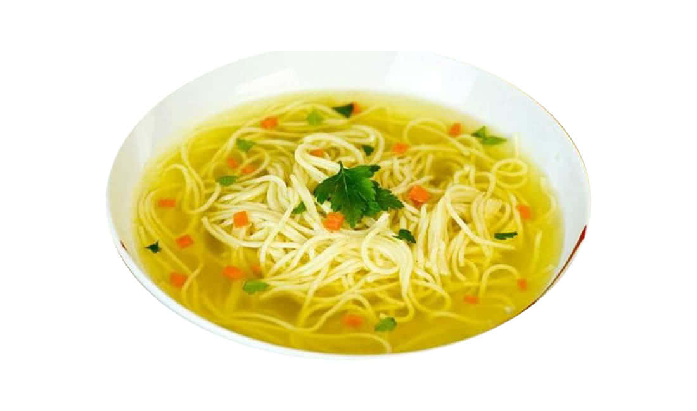
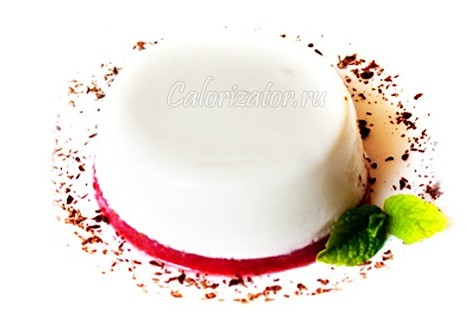
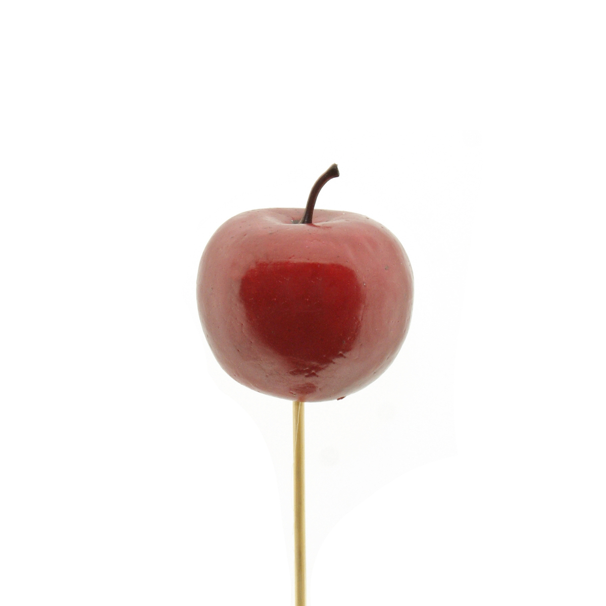
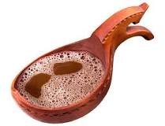
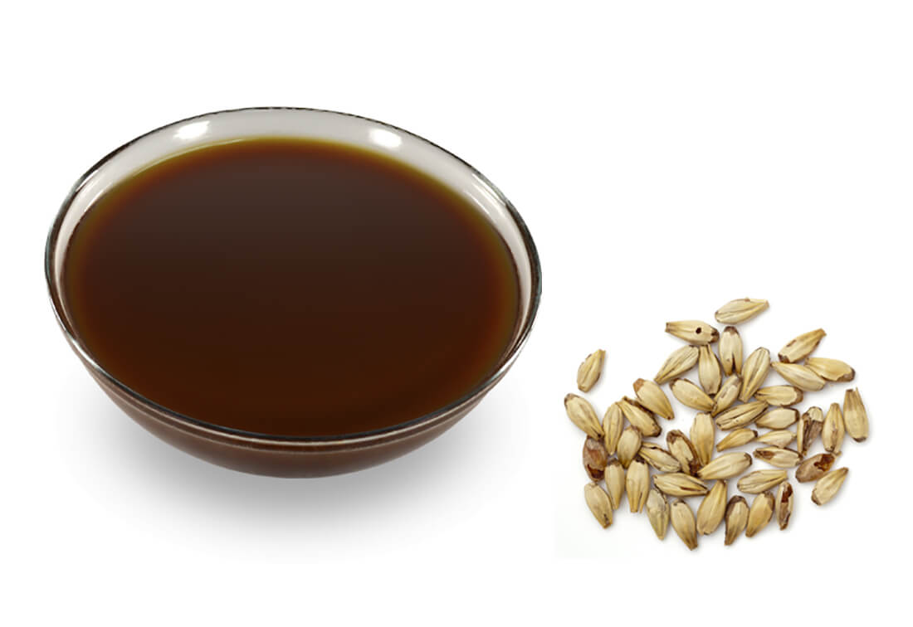

Салат «Ижевский»

- 1 курица или ½ кролика
- огурцы свежие или солёные - 2 штуки
- яйцо -4 штуки
- картофель -2 штуки
- салат зелёный - 8 листиков
- майонез - 4 столовые ложки
- соус томатный - 1 столовая ложка
- сметана - 2 столовые ложки
- помидоры - 4 штуки
- грибы маринованные - ½ стакана
- перец чёрный
- соль по вкусу.
ИНГРЕДИЕНТЫ:
- Отварное (можно жареное) куриное или кроличье мясо отделить от костей.
- Мясо, варёный картофель, маринованные грибы, свежие или солёные огурцы, крутое яйцо нарезать мелкими кубиками.
- Посолить, поперчить, всё перемешать, заправить сметаной или томатным соусом.
- Готовый салат выложить на листья зелёного салата.
- Посыпать нашинкованным луком, зеленью, украсить кусочками мяса, варёного яйца, нарезанными помидорами, зелёным горошком.
ИНСТРУКЦИЯ ПРИГОТОВЛЕНИЯ:
Зуринский салат

- редька - 1 штука
- картофель - 2 штуки
- огурцы - 2 штуки
- лук зелёный шинкованный - 4 столовые ложки
- салат зелёный - 4 листика
- петрушка - 4 веточки
- сметана - 3-4 столовые ложки
- уксус 9%-й - 1 столовая ложка
- студень - 80 грамм
- соль по вкусу
ИНГРЕДИЕНТЫ:
- Редьку, варёный картофель, свежие огурцы нарезать тонкими ломтиками.
- Всё соединить, добавить сахар и уксус по вкусу.
- Уложить горкой в салатник, заправить сметаной, посыпать зеленью петрушки.
- Оформить шинкованным зелёным луком и студнем.
ИНСТРУКЦИЯ ПРИГОТОВЛЕНИЯ:
Суп гороховый с клёцками из дрожжевого теста

- кости - 500 грамм
- мясо - 200 грамм
- горох -1 стакан
- морковь - 1 штука
- картофель - 3 штуки
- лук репчатый - 2 штуки
- соль и перец по вкусу.
- густое дрожжевое тесто - 200 грамм
- яйцо - 1 штука
- масло сливочное - 1 столовая ложка.
ИНГРЕДИЕНТЫ:
- В кипящий мясной бульон опустить промытый горох и варить до готовности.
- Затем положить нарезанные картофель, морковь и лук.
- После того как овощи сварятся, ввести нугыли.
- Варить ещё 10 мин, добавив спассерованные коренья.
- Суп подавать с мясом, посыпать зеленью.
- В кислое дрожжевое тесто добавить яйцо и сливочное масло, замесить, затем тесто раскатать на тонкие жгуты и нарезать длиной 6-7 мм, толщиной 4-5 мм. (Приготовление нугыли)
ИНСТРУКЦИЯ ПРИГОТОВЛЕНИЯ:
Тыкмач

- картофель - 3 штуки
- лук репчатый - 1 штука
- масло сливочное - 2 столовые ложки
- сметана - 3 столовые ложки
- морковь - 1 штука
- лавровый лист - 1 штука
- соль и перец по вкусу.
ИНГРЕДИЕНТЫ:
- Замесить пресное тесто как для домашней лапши, раскатать и разрезать небольшими квадратиками.
- В готовый бульон опустить нарезанный кубиками картофель.
- После закипания ввести тыкмач, затем — пассерованные коренья, подавать со сметаной.
ИНСТРУКЦИЯ ПРИГОТОВЛЕНИЯ:
Желе молочное

- молоко - 1½ стакана
- вода - ½ стакана
- сахар - ½ стакана
- желатин - 1 столовая ложка.
ИНГРЕДИЕНТЫ:
- Молоко нагреть до кипения, соединить с сахаром и распущенным желатином, непрерывно помешивая, довести до кипения. Готовую смесь процедить и охладить
- Разлить в формочки и поставить в холодное место на 1-2 часа.
ИНСТРУКЦИЯ ПРИГОТОВЛЕНИЯ:
Яблоки в сиропе

- Яблоки - 4 штуки
- сахар - 6 столовых ложек
- яблочный отвар - 3/4 стакана
- вино - 1 столовая ложка.
ИНГРЕДИЕНТЫ:
- Яблоки промыть в холодной воде, удалить семена, очистить от кожицы, не убирая плодоножку.
- Во избежание потемнения хранить в подкисленной лимонной кислотой воде.
- Варить 10-15 мин, в зависимости от сорта, а затем вынуть на сито и разложить в вазочки.
- В полученный отвар положить сахар, тщательно размешать и варить 8-10 мин.
ИНСТРУКЦИЯ ПРИГОТОВЛЕНИЯ:
Квас - Сюкась

- солодовая и ржаная мука
- вода
- дрожжи
- сахар
ИНГРЕДИЕНТЫ:
- В горячей кипячёной воде развести солодовую или ржаную муку, поставить в печь на 5-6 ч, после чего развести кипятком, процедить и охладить до 25-30° С.
- Затем ввести туда готовую закваску, положить мяту (по желанию) и дать постоять 12-15 ч.
- В тёплой воде развести немного сахара, подбить мукой и дрожжами, поставить в тёплое место и дать подойти. (Приготовление закваски)
ИНСТРУКЦИЯ ПРИГОТОВЛЕНИЯ:
Сусло - Варсь

- солод - 2-3 кг
- сахар - ½ кг
ИНГРЕДИЕНТЫ:
- Солод размешать горячей кипячёной водой, поставить в печь. Солод должен хорошо упреть и иметь сладковатый вкус.
- Эту массу выложить в специально приготовленную корчагу, дно и бока которой заранее обложены промытой соломой или сеном.
- После этого корчагу поставить в жарко протопленную печь на 16-20 часов. Чтобы тесто совсем не выгорело и не высохло, нужно несколько раз вливать в него кипячёную тёплую воду.
- На следующее утро вынуть из печи корчагу, если она новая, на уровне двух-трёх пальцев над дном сделать отверстие для слива и слить сусло в посуду.
ИНСТРУКЦИЯ ПРИГОТОВЛЕНИЯ: